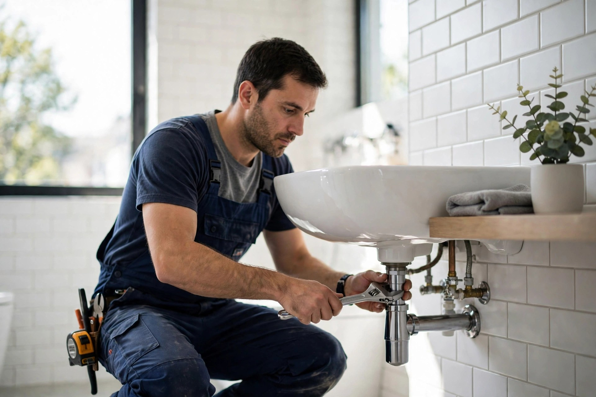
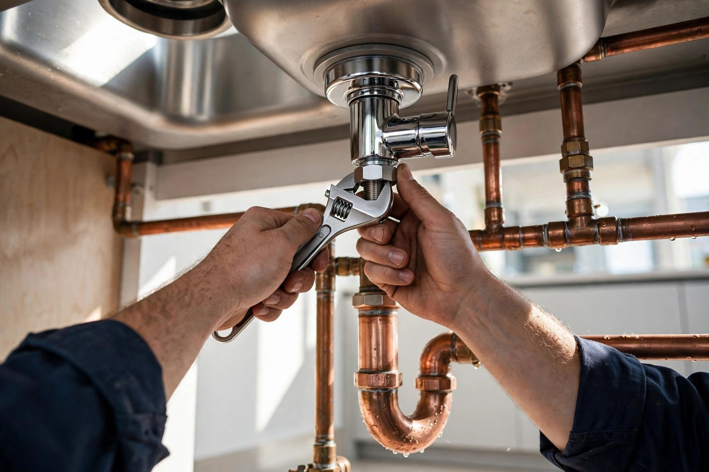
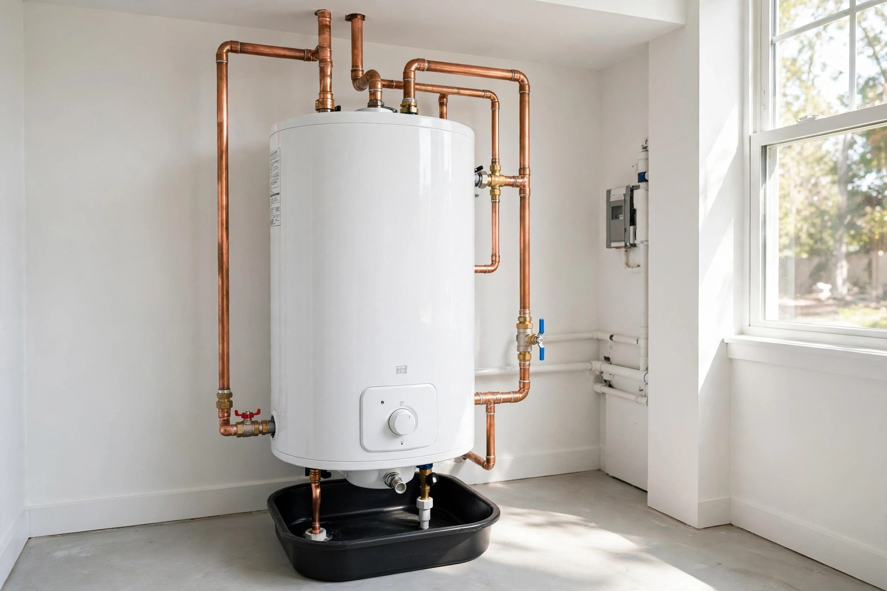
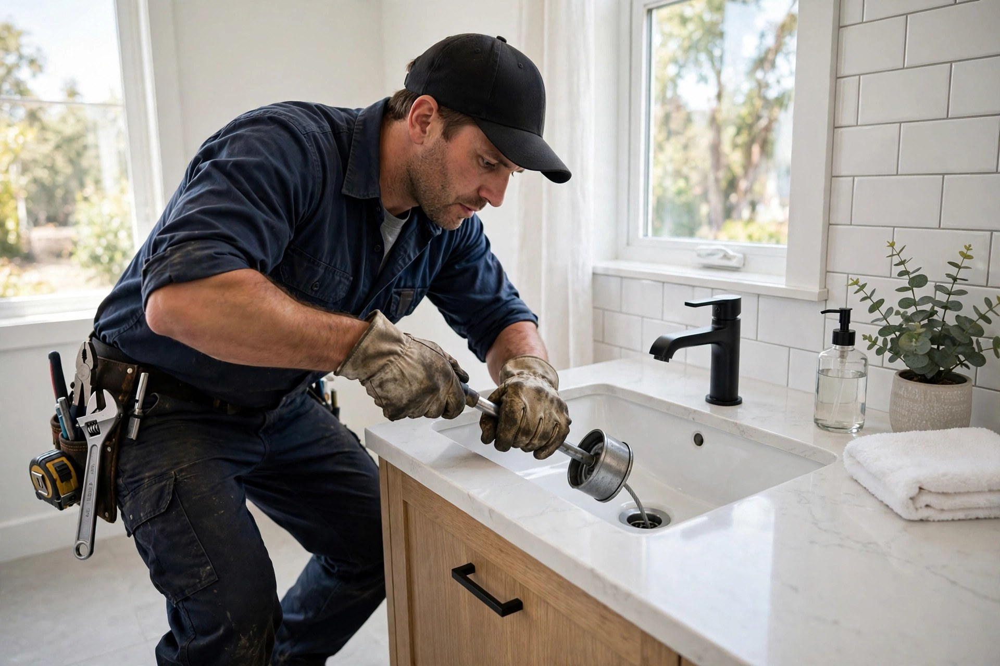

Plomberie résidentielle
Installation, réparation et entretien pour votre maison — du robinet au drain principal.

Sorel-Tracy, Québec · Plombier résidentiel · Licencié RBQ
Installation, réparation de fuites et débouchage pour votre maison — un travail propre, expliqué clairement, fait dans les règles de l'art.
Ce que nous faisons
Installation, réparation et entretien pour votre maison — du robinet au drain principal.
Détection et réparation de fuites d'eau et de tuyaux, pour éviter les dégâts coûteux.
Robinets, toilettes, éviers, lavabos et douches installés proprement.
Installation, remplacement et réparation de chauffe-eau — pour une eau chaude fiable.
Drains et égouts débouchés efficacement, à l'intérieur comme à l'extérieur.
Plomberie complète pour vos projets de rénovation de salle de bain.

Pourquoi nous choisir
Un plombier d'ici qui connaît les maisons de Sorel-Tracy : prix expliqués d'avance, interventions propres et travail garanti. Dirigé par Robert Desnoyers.
Sur le terrain


Venez nous voir
Bon à savoir
Oui — appelez-nous au (450) 742-1824 pour une fuite ou un dégât d'eau. On se déplace rapidement à Sorel-Tracy et dans les environs.
Oui — installation, remplacement et réparation de chauffe-eau résidentiels, avec des appareils fiables.
Du lundi au vendredi, de 8 h à 17 h. Fermé la fin de semaine.
À Sorel-Tracy et dans les environs — appelez-nous au (450) 742-1824 pour vérifier votre secteur.
Contactez-nous